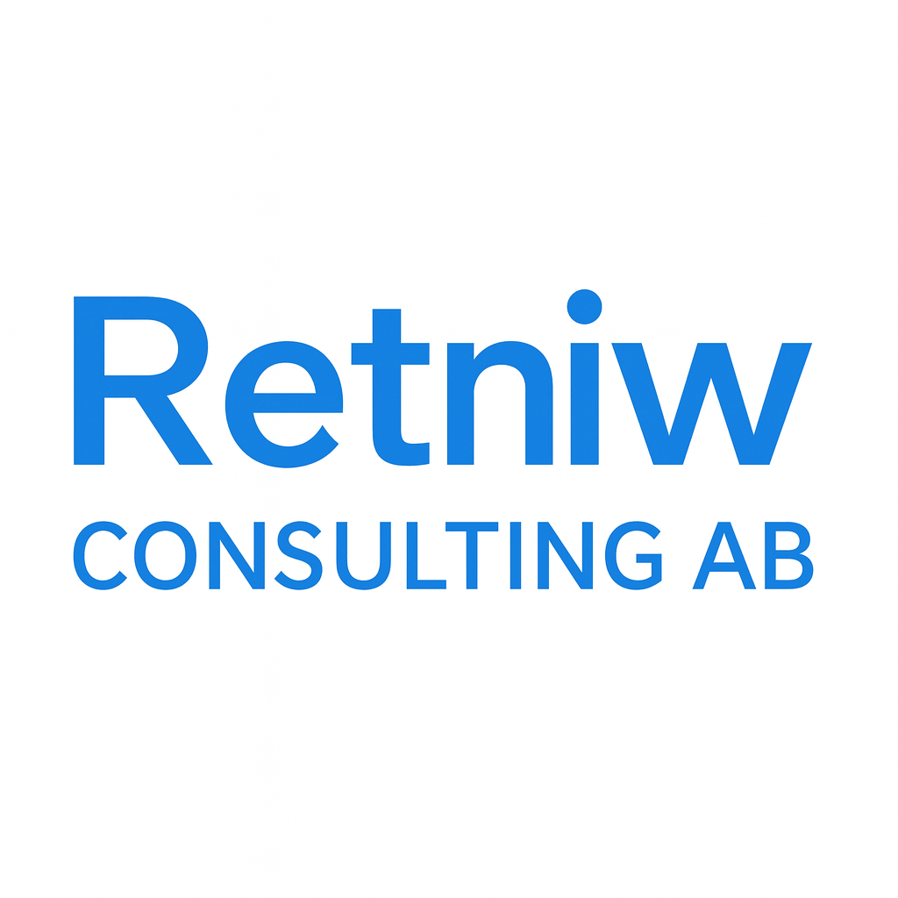
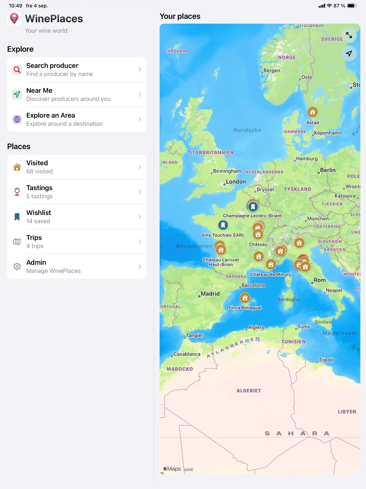
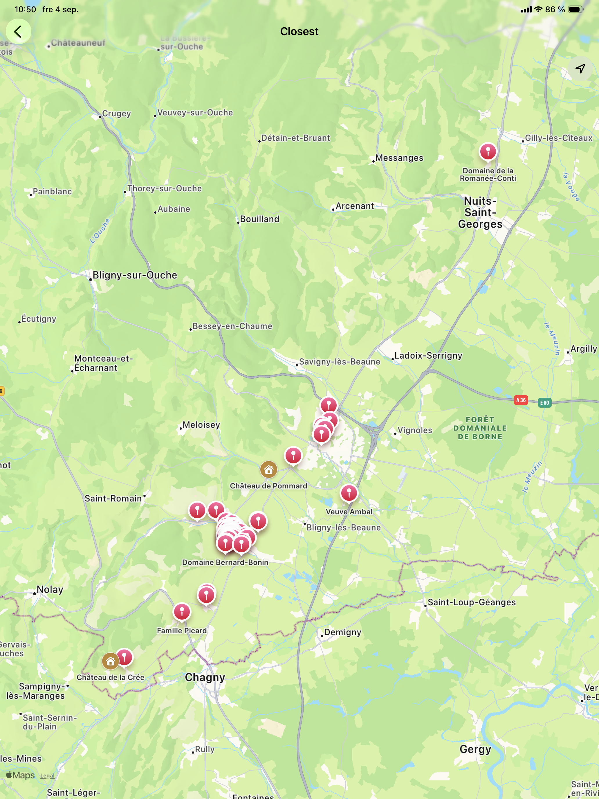
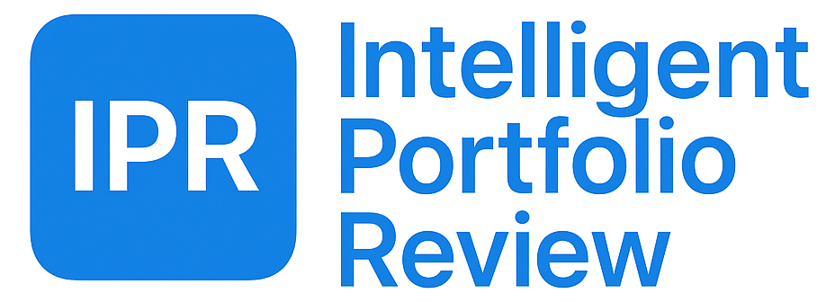
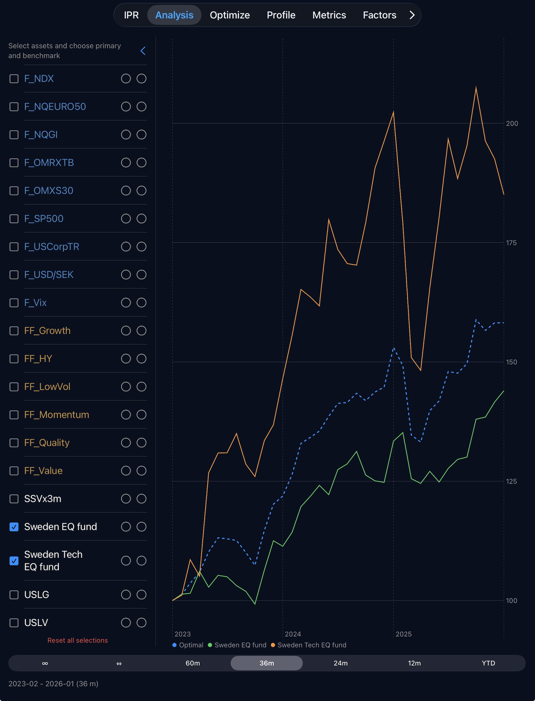
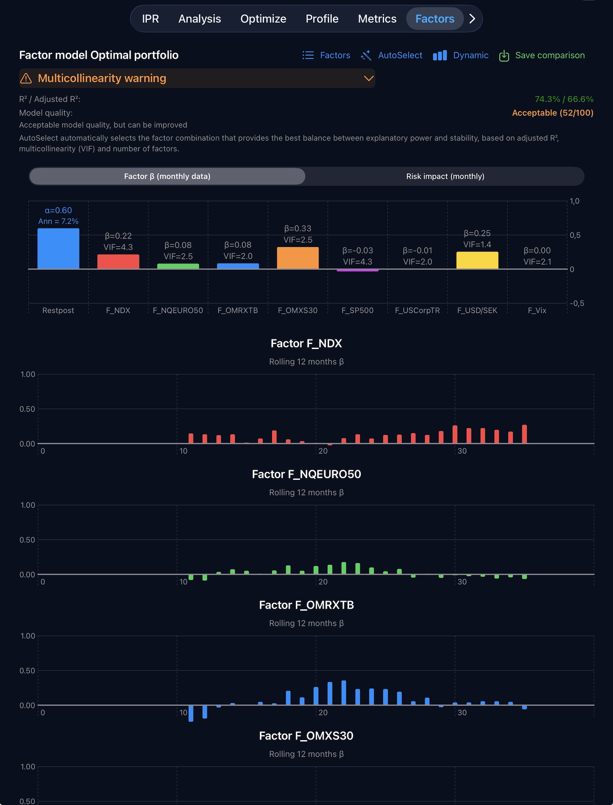

Retniw Consulting AB bedriver konsultverksamhet inom ekonomi och finans samt investeringsverksamhet avseende värdepapper och därmed förenlig verksamhet. Bolaget utvecklar och publicerar även programvaruapplikationer.
WinePlaces är en personlig vinapp med geografiskt fokus. Upptäck producenter och vinplatser, kom ihåg var du har varit, registrera provningar, spara platser du vill utforska och planera resor.
WinePlaces använder Apple Maps för att hjälpa dig hitta och utforska vinproducenter och vinrelaterade platser. Din personliga information i WinePlaces, såsom besökta platser, önskelista, provningar och resor, lagras lokalt på din enhet.


Kommer snart på App Store.
Intelligent Portfolio Review (IPR) är nu lanserad publikt på App Store som ett analysverktyg utformat för att stödja förståelse av portföljstruktur och historiskt beteende.

IPR är ett utbildnings- och analysverktyg. Det ger inte investeringsråd, rekommendationer eller prognoser.
Informationen och resultaten som visas bygger på historisk data och är avsedda att stödja lärande, analys och förståelse av portföljbeteende. Alla beslut och åtgärder är användarens eget ansvar.
IPR gör det möjligt att analysera hur fonder eller tillgångsportföljer har betett sig över tid, identifiera drivkrafter bakom historisk utveckling, utforska alternativa allokeringar samt illustrera hur olika faktorer samverkar inom en portfölj – utan att ge finansiella råd.
Appen är avsedd för användning inom EU/EES. Användning eller distribution utanför EU/EES, inklusive i USA, är inte avsedd eller tillåten.


Retniw Consulting AB utvecklar nu även en ny app, MacroPanel. Varje vecka publicerar dussintals ekonomer sin syn på ekonomin. MacroPanel låter dig se var publicerad forskning är överens, var den går isär, och vilket makroekonomiskt scenario dagens data mest liknar.
MacroPanel är ett utbildningsverktyg. Det ger inte investeringsråd eller rekommendationer.
Appen är avsedd för användning inom EU/EES. Användning eller distribution utanför EU/EES, inklusive i USA, är inte avsedd eller tillåten.
Mer information kommer snart.
📄 MacroPanel – IntegritetspolicyKommer snart på App Store.
Om utvecklaren
Retniws appar utvecklas av en oberoende styrelseledamot och senior rådgivare med mer än 30 års erfarenhet från den institutionella investeringssektorn.